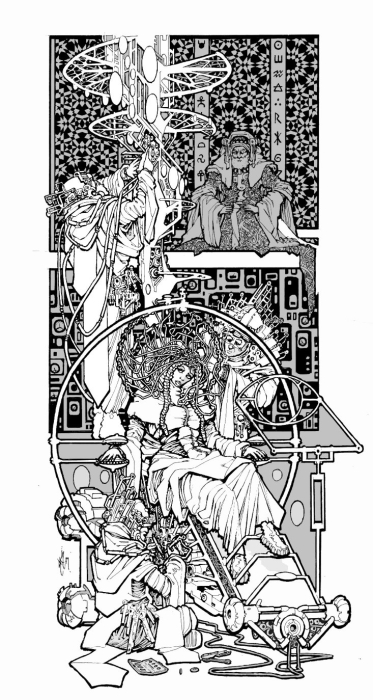
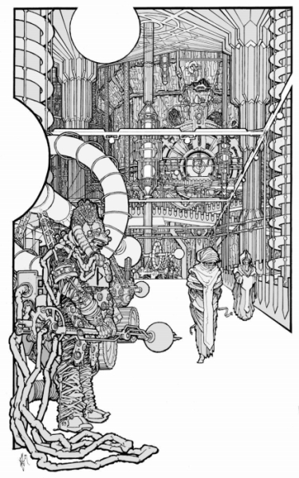
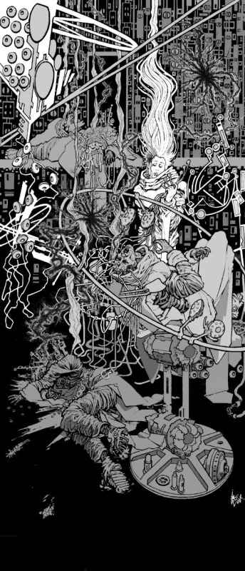
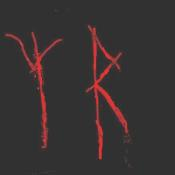

Eater (Part 2)
by
Andy Robertson

The day of rest is past. The great lift bears Khresten upwards again through the miles, and the armour of her resolve closes round her like a nightsuit. This time, she thinks, they will gain the full understanding. She will pluck it from the Night. She will not flinch whatever happens. She is no longer a girl, she is one of the elite of the Redoubt, one of the few for whom the energy needed for such rapid travel can be carelessly and routinely expended, and she will not be coward.
They rise past city after city, up through the last arcology of man, up through the storied and decorated labyrinths, to the steady beat of gongs. Messengers and notables, scientists and governors, join and leave the lift, and as the great pyramid narrows towards its top and the Tower that stands there more and more of them are Monstruwacans, recognising her and greeting her silently. It is wine to her spirit. Her chaperone stands behind her and is forgotten.
She remembers when she was new to this task. She used to weep with fear when she went up to her duty. Now the fear still comes, but it is a fear that thrills her even when it loosens her bowels and makes her limbs tremble and her heart pound.
Another day of half-life is over. Soon she will look on the Land again.
The globe is still there. Nothing has changed.
The length of the cycle the Rainbow undergoes has been consistent, plus or minus four percent, for the last seven years. Before the start of the present set of phenomena there was a long, long, period of stability when its stream flowed uninterrupted. There are near-legends of previous mutation, reaching one hundred and sixty thousand years back or more, behind the horizon of record, but these are becoming difficult to understand and interpret because of the creeping historical changes in language and writing that even the customs of the Redoubt cannot quite freeze into stasis. The last explorer to reach that region and return died ten thousand years ago and had little to say of the Rainbow except to hint that it was not malignant. The only sure legacy from the distant past is the name.
Some time in the next fourteen hours the cycle will complete.
It is long period of continuous duty for any observer, but a pause in the survey cannot be tolerated at this point. The Senior and one of the other Monstruwacans spell Khresten at the Eye, one hour each, turn and turn about. The older men's time as seers is long past and their sensitivity has deliberately been trained down so they can endure months of Watch, but they can monitor major events like this well enough.
Hours pass. At last the call to her comes. A change is imminent. As the Senior rises and gestures her to take the chair he hesitates: he will co-observe using a secondary link to the Eye and either of them will instantly cut the contact if they see fit. Take very great care.
The mind-presence of the Senior guards her back, gazes over her shoulder, like an armoured man standing there, but the essential vision is still hers. The picture on the screen comes into the clear focus only a trained seer's mind can provide. She sees that superficially the globe is still the same. But there is a sense of increasing tension, of thinning. There are movements within it, refinements of essence. It is coming to a culmination of development, moving from one cusp of stability to another, and some unbearable climax is approaching. Part of her tries and tries to see more clearly and part of her simply endures the constant strain. Slowly, slowly, it changes.
Now the dark sphere seems to swell minutely, a datum sensed telepathically and translated by her brain as an intolerable visceral pressure, a sense of suffocation and confinement. And now, a pause. More minutes pass while she continues to watch. She does not think of herself at all, she tries to be as much as possible a part of the machine, but the tension grows and grows until the transferred sensations rack her to the point of actual pain.
And now the waiting is over. Intolerably complex forces shift and move. Rigidly controlled panic invades her and she denies to herself that there is any change, but the changes happen and continue to happen and now something inside her shrivels and shrinks away as the black sac of night is visibly and enormously deformed from within. Something is moving, something is about to break free. The vast thing changes with frightening speed and something is Oh so obviously it is being born. She cannot watch it and yet she will not retreat, she is reduced to a stone trodden underfoot, the fulcrum of intolerable forces, as the carnivorous Thing emerges, pauses, and vaults clear of the Land, expanding malignantly, filling the Night with a web of sentience.
She cannot coexist with it. Her heart still beats and the mechanisms of her mind and spirit still report but there is an instant when she is not. An Eater, one of the great forces of the Night, has been born and has gone out into the seas of darkness.
It flashes away and vanishes. Almost at once the Rainbow flows again.
Khresten makes her report.
Observation is suspended while the climactic events are analysed. The Master is there, all the most Senior of the Monstruwacans, where Khresten and her team must come and testify in the high shielded chambers of the Tower. They question her endlessly, repeatedly, study the logs, talk and debate, on and on. They question her, most particularly. The mechanical recordings are open to all, but she was the one who received the faint noisings of Other intelligence that might be interpreted as intention, desire, planning, threat, if such words had any meaning at all when applied to the Eaters. Some fractional essence filtered through to her, and now she tries to express it in words, in mind-pictures, thoughts, movements, not trying to understand but simply to pass on what came from the Land. They watch her and listen to her and hier her with absolute attention.
The consensus, after days of meetings, is that the recent mutations of the Rainbow are probably no threat to the Redoubt. To the watchers of the Land something new must always mean something terrible, but it seems, it seems, that whatever is being birthed in the the agonies of that distant fountain of light will at least ignore humanity. That is cause for celebration.
Also there is a hint that they have learned something vital and new about the reproductive cycle of the Eaters, or at least of one clade of them. But seers are deliberately kept ignorant of these things to avoid giving them preconceptions of what they might sense in the Land, and Khresten is only allowed to know that perhaps there has been some increment of knowledge, some tiny real gain.
Despite her enforced exclusion from the innermost circle of knowledge, there is subtle, measured, profound, praise for her. It does not make her proud or joyful, but as she listens to it she knows, at last, that her future is fixed. Not because they have started to ask her questions with a real need to hear her answers and her opinions; not because they defer to her in tiny measure; not because she has finally been told, Yes, a place has been readied for her, she will be welcomed with ceremony and honour; but because she now understands and shares what makes them Monstruwacans.
That Thing, rejoicing in the night. That thing and its myriad peers, who are the true children of the universe. The coming eternities of Darkness belong to them, not to humanity. Light and life only had a brief place during the first beginnings of the cosmos, and the great Redoubt with all Her millions is only memory of those days, something that will soon be forgotten, a transient, fragile hive of dust and insects.
The lash has been laid upon her soul. The scar marks her as a Watcher of Monsters for all her life, married to the Night. When she looks at her peers without speaking to them or touching minds with them she sees the same knowledge in their eyes.
She returns home again. Now she walks the busy streets unafraid. The chatter and shouts of undisciplined minds are just noise: the covert or unconscious looks of lust are as meaningless and automatic as the attraction of the lodestone for a grain of iron. Of what was I afraid? she thinks. And she thinks, Soon I must leave home, leave and live alone.
But there are problems, when she tells. Her mother argues and argues and then, amazingly, weeps and bawls. Then her sisters start. Khresten submits with a distant patience. She is soon to be of age: there is nothing improper about the move: she will still be within the larger House, the linked series of dwellings where her extended family have dwelt for millennia.
But of course the argument is not about where she will live but about the shape that her future life has now irrevocably taken, as they sense with sure instinct. It has been decided. It happened to me: I did not do it, she thinks. She refrains from trying to make them understand their own true motives. She is quiet, biddable, patient. She is as kind to them as she possibly can be. The ghosts of childish anger and annoyance stir within her and fall to dust.
Sleep-time comes, still called by custom the night. The argument is still bitter and theoretically unresolved, but they go to their room and prepare for bed. And now the girls huddle and whisper, and now little Mnemmne comes forward, with jhenna and jhenni perched on her wrists. Earnest, and serious, grown-up. This is her final effort.
"See how they love us. You have the Night-hearing, you know they love you. Stay with us, please, Khresten. Don't go away to the Tower forever."
Oh Mnemmne, it is not like that. I have to go. And yes, I have the Night-hearing, but the butterflies do not love. We imagine they do, because they have grown eyes on their wings that look like funny faces, but they have no minds. There is nothing there: nothing at all. It is all just something we make up.
"You are lying," says Mnemmne, and hits her, no gentle blow. "I hate you".
It does not matter. Khresten is unmoved. She feels as though she could never be deeply moved or grieved by anything in the Redoubt again. She waits while they talk and they cry and they talk and they cry, and at last it ends. She kisses them both. No, no; do not talk more. Sleep. This will pass. Tear-stained, they sleep.
She sleeps, too. Then half-wakes, then sleeps again. The night seems endless. The vents flutter. The gentle moving waves of light on the wall counterfeit the Rainbow: the darker shapes of the furniture seem to writhe. She experiences the ghost or echo of the night-fears she knew as a child, and half-thinking compares it with amusement to the real Fear that visits her as she looks on the Land. But it is bad practice to do that. Half the fight is to stop your mind running away, and even a small indulgence may have to be paid for an hundred times over.
She resettles her thoughts by tallying the night shapes in the room with their day-time reality. The table. The chairs. The butterfly-cage. The long rows of the bookshelves. The tall column of the lamp, now in nighttime mode.
Mnemmne's small fist has left a dark sweet bruise on her hip, which she pets, delicately. She sleeps at last.
She dreams, again, and her mind turns to familiar paths. She dreams yet again that she wakes, and she half-recognises that she is in the same dream-story, yet a third time.
Will she rise now and go out into the City, and visit the gallery, and look on the Land?
But there is no need for her to go anywhere. What she was going out to find has come to her, and a dark shape bends over her, moving.
It is too real to believe. A man? Here? How? She draws her breath, but before she can cry out, instantly and without movement or transition, it is upon her. You? Is it you? She is pinned, she is unable to move, her mind is somehow disconnected from her body. Surely it is a dream. As she is pierced. A touch, a touch, but it is not as it is when she touches herself, not like anything she ever anticipated, not the way she thought it might be at all.
Fuzzy-headed, Khresten awakens.
She hurts, never mind. It is necessary to hurry and there are excuses to make. Where is she going? Up to the Tower of course, but best not to tell them that. There is some fuss now, some nonsense which she forgets at once as she dresses and dons her shoes, walks quickly to the city gate, to the Liftport, limps up the stairs, routinely greets the folk from the cities immediately above and below hers as they gather together.
But modest young Khresten has forgot her veil; a joke! Never mind, she says? And where is her chaperone, ha? And there is some more foolish questioning here too, which she must deflect. But she will not ever need to be accompanied by a chaperone from now on, of course.
A moving town, the lift arrives, and slows so that they may embark. She hastens on board as if she could speed it up that way, and frets and paces as it continues to rise, stopping at every tenth city.
How hungry she is! Starving! She jumps to the refectory, eats pastry and pulses, sips tea. Her heart races. Her mind is full of darting thoughts. She looks around at the moving volumes of the Redoubt's inward parts, the heart and lungs of the pyramid, the passages and airways, as if she had never seen them before.
Her ears pop, the temperature falls slowly, and she dons her hooded coat at a certain height, as she always does. Up and up. Stop after stop, and from time to time need for more foolish words. And now she needs to go to piss. There is only a little blood.
It will not be long now. Yes, soon.
Be patient. I cannot make it go faster by any means.
Be patient.
Here at last is the top, the last stop. Above the last city. Now, past the armed men, up through the long twisting ramps. And here are the guarded Locks that lead up to the Tower and the low-pressure areas.
Now I yield up the Master-Word to them. Be silent. They will let us pass. Silent.
Do you not need a bell...? Well, never mind. Yes, we will go up quickly.
Now here is the chamber at the root of the Tower, and we call the smaller lift that takes us up the spine of the Tower. No, I will not be challenged; I am an Apprentice, trusted. We can go up safely. There is no rigid schedule for my attendance.
Ten levels more.
Here we are. This way.
Why should anyone stop me? I will show you this as well, that is all. You require to look on the Land. I understand. A brief look will be enough, yes, I understand.
This way.
Here is the chamber we are using. Through that doorway. My team will be within.
And who are these people? Senior Monstruwacans. That one is the Senior of my group.
What?
What?
She starts forward in obedience to the clear instructions. Kill them. Enter the chamber. She stops. Her confusion is absolute.
She stands, alone and wild-eyed. The Senior regards her. She has seen the young men's hands move when they fight, and just so, his mind flashes. She senses his decision to violate courtesy and an instant later his thoughts have invaded hers, irresistably. The flame of alert that detonates in him washes over her. He cries out words of warning and rushes to seize her, but she too is running, towards the doorway.
She is very fast and very strong. He is far stronger, grappling her with arms like brass, breaking her to her knee, smashing her temple against the door frame, extinguishing her consciousness and blinding what rides it, but he is not quite fast enough.
Through the door she has managed to take another glance at the active, telepathic, screen. Something that had entered her and grown there now joins with another part of itself, coming from elsewhere, and, completed, goes about its own busy purposes.
There is an interval. Then Khresten comes to herself again with broken bloody head. She is lying on the threshold half in and half out of the chamber. The raised edge is sharp pain beneath her.
It is dark. Somewhere an alarm thunders endlessly.
Is this nightmare? Another dream?
If not a dream, then what are these shapes that surround her as she rises to her feet?
What men are so tall, so slim? What men writhe so? What men have so many strange arms or such great dark heads?
The braided columns of darkness rise about her, dancing. They trace the movement of her arms and body, gently touch her back and breast. They glide and dip, kind and gentle towards her alone.
The Master, all the most Senior of her guild, were utterly wrong, it seems. The Flowers are here, come to greet their friend and lover.
They plunge no thorn into her, but all around her is death. The walls have warped and most of the lights are out. Blood spreads. The Senior lies nearby, still, and the rest of the team are scattered among the equipment. Here and there other dark Flowers stir, tapping the still-churning mitochondria of the corpses or the hot energies of the power lines. Some of them are perched horribly, on or somehow inside the heads of the dead men and women, seeming to be rooted, moving very slowly.

Compared to the monsters in the Land they are tiny: but mere size, she knows, means little to these beings. And they are growing. They move swiftly and easily. They leave smoothed tracks of altered matter on the floor, where metal and plastic have been invaded by Other life, forced temporarily into new structures, and released back to chaos.
She walks forward and the Flowers permit her to move. They rear up three times and seven times her height. And now six surround her, in a familiar hexagonal pattern. They flutter about her and brush her face, a numbing not-touch, but they do not obstruct her in any way. They seem to regard her as some sort of center to organise themselves around, as they explore this new resource, this new kingdom.
She understands now what has been done to her mind, what has lived inside her since that first touch out in the Land, and how she has been deceived in her dreams. Or how she has deceived. Perhaps the Flowers sense her only as some mobile part of the Redoubt, some fertile, receptive area, some weak spot.
She thinks for an instant of their destruction. She only thinks, only for an instant, because in that instant her mind is compelled to alteration. It is not a threat, but simply the fact, known at a level below communication, that if she has enmity towards them she will cease to exist before she has finished coherently forming the idea. She must remain their friend.
So, she will be a friend. It is a delicate balance: her thoughts flow towards hate, fear, horror, rage, again and again, and each time flinch back as if from a charged rod. But after a few seconds some sort of stability is reached. Now she is able to keep her emotions towards them those of love only. She recites to herself, Do not think hatred. Remember, these are guests.
She has survived. Perhaps others can. Perhaps she will live for a long time here, above a pyramid of slaves and dancing darkness. And that will be good, of course.
She comes to the screen, still somehow powered up. She picks up on the secondary link with her hands held above the hands of the dead and drained husk that sits there, and she looks out. She regards What hovers there in the night. Then she directs the Eye down and around to observe the radius of the Land just beyond the Circle.
Without surprise she notes what is growing down there. What intends, she supposes, to make of the Redoubt what it has made of the Rainbow, what it has made of her.
Her courage, and her silence, and even her ignorance, are important now.
She knows a little of what is coming. She knows, but will not by any means tell until she must, that lightning gathers and thunder rises in the channels of the ancient machines. Nerved by electronic synapses a million times faster than living flesh or stalking ghost, the Tower has gone into secondary lockdown mode. On the instant of first warning every passage between it and the Redoubt was flooded with incandescent plasmas, and now the corrosive energies that infest its outer shell are being fired to tenfold power. The major structural members are lit, and the vibration spreads from limb to limb. The ancient skeleton is aflame. The decks rock.
It is not simply power that is being mustered. These energies are coded, destructive, cunning, violating, sterilising. Once confined in any way the pneumavores are surprisingly easy to destroy. The best tools of all are certain subtle subsets of electronic vibratory patterns, but many of the Eaters are delicate enough to be wounded and disrupted by a strong beam of coherent light, and if all else fails enough simple heat will do.
The Sharks of the Ether can repattern themselves onto condensed matter and twist it to their will, can pluck out a man's soul by the roots streaming fluid like blood and feast on the delicate, lovely, patterns, but the stones and fires of the early universe are not their proper home. They belong among the seas of electrons, the dust and gas and decaying protons, the delicate streams of plasma, the vacuum, the dying microwave echoes. They belong among the things that are to come, not among the energies of the world's short Youth.
But those energies linger here, burning hot, and the beings bred from them linger too. Bred from those energies and skilled in their use, ten million years of war have not left them defenceless, and they do not have to fully understand their enemies in order to destroy them.
And the Flowers can know nothing of this except what Khresten knows, and, perhaps, allows to slip from her mind to them. This is why the wisdom of the Redoubt selects Khresten and her peers to send their minds out into the Land: why it chooses those like Khresten, who would very freely confess that they are only foolish, ignorant, young men and women.
Now, swiftly, war is declared. The walls of the chamber purl with fire. The floors shake. The doors spark. From every point and edge blooms a ghastly nimbus of light. Khresten's white-ash hair rises with the static charge, where it is not glued down with blood.
The Eye, kept open by some unknowable pressure, is fused, as whatever cunning the Eater was using to keep the path available is checkmated by the ancient simplicity of a six thousand percent overvoltage and a failsafe incendiary. Hissing metal scalds Khresten, and the Flowers dance madly.
She touches the nearest dark web and kisses it, with her mind.
Let me explain, she spieks. It is very sad for us. But I will tell you what I know.
The fire is the Tower responding. The cybernetics are fast. The Eye-terminal fused because the alarms have destroyed it. And the shields are up, not only round the Tower, but between the levels as well.
The Tower, the machines, are fighting us. Not the men, not yet. It is only the machines we fight.
Can you kill the machines? Can you Eat their souls?
We are confined to this level and soon this level will be split up into tiny parts. Then each part will be burned clean and everything in it will be destroyed.
But I will try to help you. I will do everything I can. I am trying to warn you now. It was so brave of you, to change yourselves, to make yourselves tiny and explore here, in this inferno. You only wish to live and grow, as all things do. I understand. I do not blame you. How you must hunger, out in the Land.
But there, at the door...
You see it turn silver-white? You do not like that fire, do you? I see you too can die. Oh, that is sad. That is sad. What can be done? How can we save ourselves?
Be very still. Perhaps the fire will not destroy us all. Retreat to me. I will do everything I can to help you. I understand.
I will protect you.
It is only the machines we face. It is not the men yet.
Yes, the machines are terrible. But when the men come, you will know Fear.

Her left hand, unregarded, has been writing something over and over again on the surfaces around her, dipping back to the side of her head to pick up its red ink and then fluttering out again. It is writing over and over again in the darting strokes of the set-speech BEWARE DREAMS SEERS BEWARE YOUR DREAMS, she is right-handed, it is in reversed mirror script . She will not think about her left hand and anyway she cannot see well to that side any more since she struck her head so hard.
She has left her message. Now there is only one other thing to do.
Far below, the bowels of the Redoubt shunt more and more energy to the defence. Mechanism after mechanism goes offline. The ventilators, the fans, the air and water pumps, are temporarily shut down as valves seat against reflux, and floods of power become available. The lifts cease to move. All industry stills. Throughout the pyramid and the Underground Country the lights dim.
The whole Redoubt braces for combat. In the cities, everywhere, there is the racing of armed men, but the Air Clog is unbreached, the temporary pneumavore activity at ground level outside it fading, and it will not be that kind of fight. Instead, the Earth-current, normally diverted into a hundred quiet streams, is being shaped to flow upward for one single purpose, to be forged and barbed by the instrumentalities of the Tower into a sword of defence.
The outer shell of the Tower is totally sealed. The sensors that were acting as paths have been destroyed, internal barriers have successfully prevented any spread of corruption within the structure, and the passages between it and the Redoubt are incandescent, triply impassable. The defence has held firm, above and below. The surviving Monstruwacans turn to counterattack. It is time to harrow the heart of the invasion.
The energies of the Tower are concentrated on the single infected level, and each segment is sterilised and cleared off in turn. Platoons of shielded and nightsuited Watchmen advance through secured areas in the practiced and ordered succession, setting the touchpoints, channelling and guiding the rivers of light. Before them, plastic burns, flesh burns, metal burns. Planes of lightning criss-cross the open spaces as the air burns and then submits to its duty, conducting the patterns of hatred and defence which web the structure tighter and tighter.
If need be, the entire Tower can be melted like a candle. But that will not be necessary.
Khresten stands amid a shrinking crowd of otherness and weeps to see each of them die and vanish. Ozone and nitrous oxides scorch her lungs. She bleeds, she staggers. Not long, now.
The walls belly and drip fire. The hammering pulses invade the raised metal overfloor to a chorus of lightnings, and half the remaining Flowers wink out of existence. Others cling on to dead flesh, to the few remaining insulated structures, or to Khresten herself, protected by the console. They do not take revenge and do not attempt to communicate with her again. We do not understand them either, she thinks. So must it always be.
The last of them vanishes. Did they ever really spiek to her? Did her mind translate the unknowable into some sort of likeness of humanity? Was what she rendered to herself as dream speech and touch no more a communication than are the tropisms of a plant's root seeking nourishment? Than the butterfly-lures on her wrists?
It does not matter.
Like a swimmer clawing up out of murdering black water, she is herself again, her mind her own. She can see the armoured men approaching between the overlapping curtains of brilliance, but there is no rescue for her there, no touch, no warm community of life ever again. She is the enemy. All that remains of the invasion is the thing inside her, the thing that she now she feels, again, somehow interfering with her thoughts.
But you have not behaved well, she thinks. Not at all in the way that is proper for a guest.
I would be quit of you.
And now.
What is the proper, the graceful, way to go about this?
The room is a hell of light and power, brighter and brighter.
She kneels down, lies down, embraces the fire, opens herself to it.
Does one of the watching warriors salute her?
The fire is not hot, but it erases all complexity in matter or energy, reducing it identically to molecular and electronic uniformity, be it flesh or cyber or ghost. There is no pain, only numbness as the nerves are destroyed. It burns through her, seeking Otherness. It unpicks each cell. It illuminates, from inside, the delicate bones of her skull and the flakes of her back.
They will seal this level, and when they have examined it they will burn every particle of matter in it to ash and gas, and name it Forbidden. They will read her message in burnt blood on the burnt metal and they will burn it and burn her, too.
But they will learn from her words and they will praise her; for she was faithful, she made a good end.
© 2001 by Andy Robertson.
Artwork © by SMS.